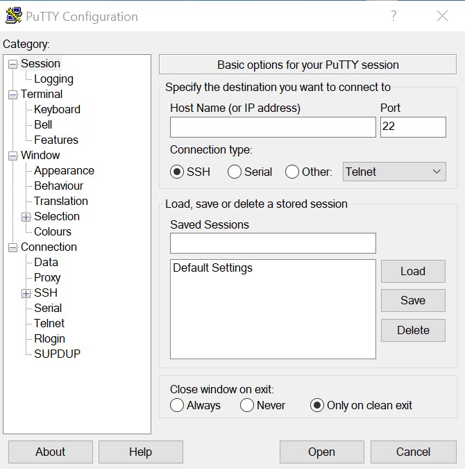
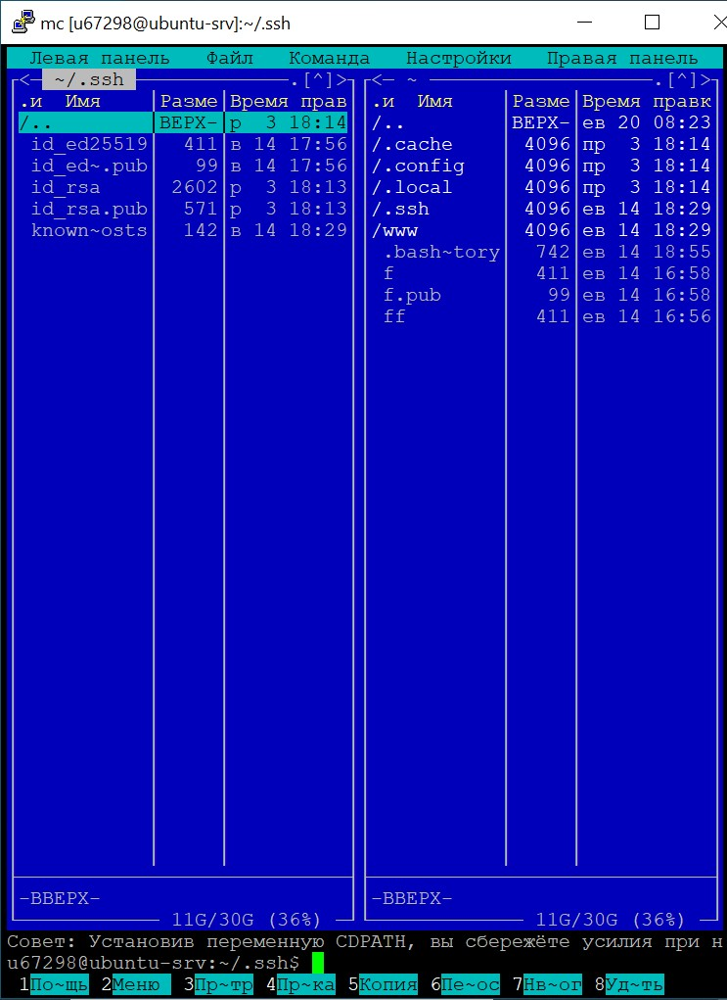
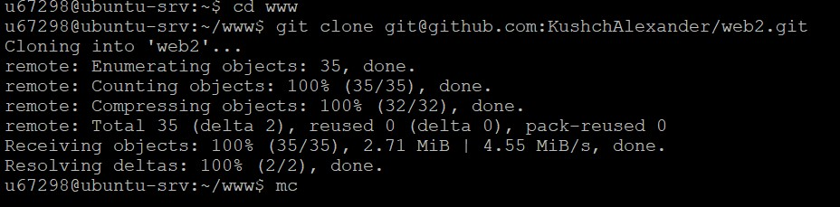

1.Вход в Putty

2.Подключение к серверу
3.Вводим логин и пароль
4. Ping для kubsu.ru
5. Ping для kubsu-dev.ru
6.nslookup -type=mx kubsu.ru
7.nslookup -type=any kubsu.ru
8.nslookup -type=mx kubsu-dev.ru
9.nslookup -type=any kubsu-dev.ru
10.whois для kubsu.ru
11.whois для kubsu-dev.ru
12.ssh-keygen для создания ssh ключа
13.меню сервера
14.каталог /.ssh

15.foxzilla
16.копируем ssh ключ
17.настройки профиля Github
18.раздел ssh и gpg keys
19.вставляем ключ
20.присоединили ключ, репозиторий со скринами
21.Копируем ключ-ссылку нашего репозиторя
22.git clone для клонирования репозитория

23.используя winscp копируем файлы из каталога www.
24.выбираем куда перенести папку на локальный компьютер
25.перенесли папку
26.теперь так как мы добавили новые скрины с переносом, нам необходимо на сервере перезаписать наш репозиторий, то есть мы открываем меню (команда mc) и заходим в каталог www, где хранится наш репозиторий.
27.Далее выбираем нашу папку и при помощи команды снизу под номером 8 "Удалить", удаляем наш репозиторий
28.После этого заново копируем ключ-ссылку нашего репозитория и повторяем действия, прописанные выше с командой git clone. Всё готово! И наш сайт действителен по ссылке http://u67298.kubsu-dev.ru/web2/